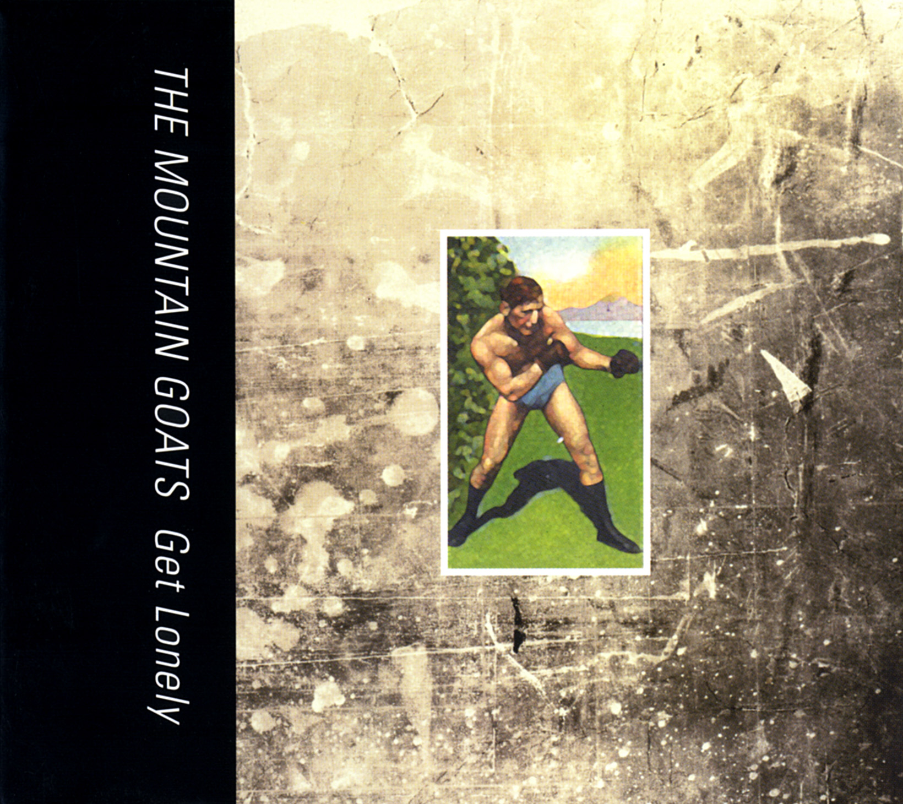

Title: Get Lonely 1 2
Released: 2006 3
Label: 4AD
(none)
I leave the house as soon as it gets light outside
Like a prisoner breaking out of jail
And I steal down to Business 15-501 7
Like I had a bounty hunter on my tail
And somebody stops to pick me up
But he drops me off just down the block
And along the highway where the empty spirits breathe
Wild sage growing in the weeds
Walked down the soft shoulder and I count my steps
Headed vaguely eastward, sun in my eyes
And I lose my footing and I skin my hands breaking my fall
And I laugh to myself and look up at the skies
And then I think I hear angels in my ears
Like marbles being thrown against a mirror
And along the highway where unlucky stray dogs bleed
Wild sage growing in the weeds
And some days I don’t miss my family
And some days I do
Some days I think I’d feel better if I tried harder
Most days I know it’s not true
I lay down right where I felt cold grass in my face
And I hear the traffic like the rhythm of the tides
And I stare at the scrape on the heel of my hand
‘til it doesn’t sting so much and until the blood’s dried
And when somebody asks if I’m okay
I don’t know what to say
And along the highway, from cast-off innumerable seeds
Wild sage growing in the weeds
Shadows on the broad lawn, canopy of trees
Sometime after midnight the ground is gonna freeze
Birds in the frosty air
What are they doing there?
Greenhouse full of butcher’s-brooms 11
Breezes at my back
Sometime before the sun comes up
The earth is gonna crack
I look down at my hands
Like they were mirrors
Fresh coffee at sunrise
Warm my lips against the cup
Been waiting such a long time now
My number’s finally coming up
All the neighbors come on out to their front porches
Waving torches
It was raining outside, so I cleaned house today
Spent half of the morning throwing old things away
Try not to get caught up
Try to think like a machine
Focus in on the task
Try not to think about what it means
Can’t get you
Out of my head
Lost without you
Half dead
Took my spot at the window
Looked at the road
Dots and dashes of traffic
Like a message in code
And whole boxes of memories
Wrapped up at the curb
I sang songs to myself
Didn’t have any words
Can’t get you
Out of my head
Lost without you
Half dead
Stole out to the backyard late last night
Pine trees frozen in the silvery moonlight
Rising like giants from the cold earth
What are the years we gave each other
Ever gonna be worth?
Can’t get you
Out of my head
Lost without you
Half dead
I will rise up early and dress myself up nice
And I will leave the house and check the deadlock twice
And I will find a crowd and blend in for a minute
And I will try to find a little comfort in it
And I will get lonely
And gasp for air
And send your name off from my lips
Like a signal flare
And I will go downtown, stand in the shadows of the buildings
And button up my coat, trying to stay strong - spirit willing
And I will come back home, maybe call some friends
Maybe paint some pictures, it all depends
And I will get lonely
And gasp for air
And look up at the high windows
And see your face up there
A bad dream shook me in my sleep
And I woke up sweating
Ran through the dark to the shower
Already forgetting
Try to think good thoughts
Trying to find my way clear
Let the room fill with steam
Trace pictures on the mirror
Ghosts and clouds
And nameless things
Squint your eyes and hope real hard
Maybe sprout wings
I clawed my way to the living room window
Stood there in the cold
The last bits of my dream like figures in the distance
Hard to hold
I thought of old friends
the ones who’d gone missing
Said all their names three times 18
Phantoms in the early dark
Canaries in the mines 19
Ghosts and clouds
And nameless things
Squint your eyes and hope real hard
Maybe sprout wings
I went down to the gas station
For no particular reason
Heard the screams from the high school
It’s football season
Empty lot the station faces
Will probably be there forever
I climbed over the four foot fence
I was trying to sever the tether
Moon in the sky
Cold as a stone
Spend each night in your arms
Always wake up alone
I lay down in the weeds
It was a real cold night
I was happy ‘til the overnight attendant
Switched on the floodlight
Walking home I was talking to you under my breath
Saying things I would never say directly
I heard a siren on the highway up ahead
Kinda wished they’d come and get me
Frost on the sidewalk
White as a bone
Tried to get close to you again
Always wake up alone
And as I was crossing our doorstep
I hesitated just a moment there
Remembered the day we moved into our small house
‘Til the vision got too vivid to bear
You were almost asleep
Halfway undressed
I lay right down next to you
held your head against my chest
And a guy with any kind of courage
would maybe stop to think the matter through
Maybe hold you still and raise the question
Instead of blindly holding onto you
But we crank up the heat
And you giggle and moan
Spend all night in the company of ghosts
Always wake up alone
Autumn came around like a drifter to an on-ramp
There were wet leaves floating in gutters full of rain
Took to walking barefoot around town
Melodies from grade school kicking in my brain
Saw you on the crosstown bus today
You were reading a magazine
I turned my face away
And I shut my eyes tight
Dreamed about the flowers that hide from the light 24
On dark hillsides in the hidden places
The brakes howled and the bus pulled up near my house
And I got off at the corner
Pulled my sleeves down over my hands, over my hands
And I wished I was someone else
And I wished it was warmer
And when I got home I thought about you
Like a desperate policeman searching for clues
And I almost passed out just then
And I shut my eyes again
Headed for the dark hillsides
In the hidden places
No one washed behind my ears
High in the trees alone for years
Practicing my solitary scales ‘til they rose like balloons
Watching them go where they will go
Face in the leaves
Song in my throat
Fall through the air
Hoping to float
Practicing my solitary scales ‘til they grow heavy
Too heavy to carry
Watching them go where they will go
On the morning when I woke up without you for the first time
I felt free and I felt lonely and I felt scared
And I began to talk to myself almost immediately
Not being used to being the only person there
The first time I made coffee for just myself I made too much of it
But I drank it all just ‘cause you hate it when I let things go to waste
And I wandered through the house like a little boy, lost at the mall
And an astronaut could’ve seen the hunger in my eyes from space
And I sang oh, what do I do?
What do I do?
What do I do?
What do I do without you?
On the morning when I woke up without you for the first time
I was cold so I put on a sweater and I turned up the heat
And the walls began to close in and I felt so sad and frightened
I practically ran from the living room out into the street
And the wind began to blow and all the trees began to bend
And the world, in its cold way, started coming alive
And I stood there like a businessman waiting for a train
And I got ready for the future to arrive
And I sang oh, what do I do?
What do I do?
What do I do?
What do I do without you?
When the villagers come to my door
I will hide underneath the table in the dining room
Knees drawn to my chest
When the villagers come to my door
I will breathe shallow breaths from high up in my stomach
Ah-ah-ah-ah-ah-ah-ah
Waiting for the front door to splinter
Waiting all winter
When the villagers come to my door
I’ll be all tucked away with my face to the floor
And my eyes closed
And no one knows how to keep secrets ‘round here
They tell everyone everything soon as they know
And then where is there left for poor sinners to go?
Waiting for the front door to splinter
Waiting all winter
Sun just clearing the tree line when my day begins
Slippery ice on the bridges, north-eastern wind coming in
You will bruise my head, I will strike your heel 30
Drive past woods of northern pine, try not to let go of the wheel
Dream at night
Girl with the cobra tattoo
On her arm
Its head flaring out like a parachute
Prisms in the dewdrops in the underbrush
Skate-case sailor’s-purses 31 floating down in the black needlerush 32
Higher than the stars I will set my throne
God does not need Abraham, God can raise children from stones 33
Dream at night
Girl with the cobra tattoo
And try to hear
The garbled transmissions come through
The day I turned my back on all you people
I felt an itching in my thumbs
Salt air like a broadcast from the distant dark beyond
When my transformation comes
I went down to the warm, warm water
Saw a pelican fly past
Waved once at the highway and then left all that behind me
I went wading through the grass
And no one was gonna come and get me
There wasn’t anybody gonna know
Even though I leave a trail of burned things in my wake
Every single place I go
And it was cool and it was quiet
In the humid marsh down there
I let my head sink down beneath the brackish water
Felt it gumming up my hair
The sun was sinking into the Atlantic
The last time that I turned my back on you
I tried to summon up a little prayer as I went under
It was the best that I could do
And I said let them all fare better than your servant
The reeds all pricking at my skin
Here’s hoping they have better luck than I had down here with you
All that water rushing in
I am hiding in the house
Someone’s coming through the gate
When the doorbell sounds like an air-raid siren
I am lying in wait
People used to come around
They fish-eyed and they rubber-necked 38
Anyone who’d come to visit now
Is automatically a suspect
I creep up to the window
Me and my buzzing brain
And we watch two Jehovah’s Witnesses
Retreating down the lane
I’m not coming out yet
It’s too cold
Leave me alone ‘til I learn
How to spin straw into gold 39
I put on night-vision goggles
Work my way along the wall into the kitchen
As soon as the first snow fell this year
My fingers started itching
And I locked up the doors
And I sealed up all the windows
And friends came by sometimes for a while
I never let ‘em in though
And then they stopped, and then they stopped at last
And now it’s just us three
These walls and the Church of Jesus Christ
Of the Latter Day Saints and me
And I’m not coming out yet
It’s too cold
Leave me alone ‘til I learn
How to spin straw into gold
You went away to Stockholm 42 for a week
You came back with some scratch-marks on your cheeks
The towers line the highway and they cry
From deep down in their guts until they die
The water tower crew are total devils
Toxicity near saturation levels
I rise up and greet the day
See the serpents rising from the clay
You were headed down to Salzburg 43 for the night
All my hair was turning white
You and your crew were good to go
So many people that we’ll never really know
I saw the city men, they make me laugh
Digging up the cables, cutting them in half
I watch the ancient sun until it falls
See the serpents coming through the walls
You clean out your junk-drawer, you mop up some blood
While the first of the new creatures rises from the mud
Cursing the moment that saw him draw breath
The ghost on your doorstep is starving to death
You spray down the windows, you wipe them all clean
And you douse your old clothing with fresh gasoline
And the ghost on your doorstep is soaked wet with rain
And he clutches his stomach and howls at the pain
And you can stay busy all day
He’s never going away
So let all the lights blaze, keep your heart light
Play really loud music all hours of the night
And when you set the table, set it for two
The ghost on your doorstep has to eat, same as you
Same as you
“The new record, uh, people have been calling it a breakup album, which is kind of weird ‘cause it’s not, uh, but at the same time, uh, I mean, it’s about solitude, and, uh, which is something I have the luxury of going through while I’m on tour. It’s a great job, but you spend a lot of time by yourself in rooms and if you are a person who, uh, you know, is given to depressed states, you can really carve out some little holes for yourself, uh, in hotel rooms. And since I’m also a bit hypochondriac and don’t like to hang out with people, uh, that’s sort of, it makes me able to sort of sink into these depths when I’m out there. Which, usually I just sit there and mope, watch Law & Order reruns, but a couple of tours ago, I thought, well, you know, I’ve seen all these episodes of Law & Order a bunch of times, and so I started writing in the hotel rooms, ‘cause that had actually worked really well for The Sunset Tree. Four of its songs were written on tour, and so, uh, actually, the one I just played, uh, was the first one I wrote, in a hotel room, when I was working on this record. I wrote it in, uh, Evanston, Illinois, at a Hilton Garden Inn.” – 2006-08-21 - KEXP Session - Seattle, WA ↩
“People keep saying that the new album is a breakup album. I don’t really know where they got that idea. But at the same time, you don’t want to argue with people, in case they’re fixing to say good stuff about your record. ‘Oh yeah, you like it, and it’s a breakup - oh yeah, breakup! Absolutely.’ The fellow in this song is more, uh, breaking up with, uh, the basic units of what constitutes him as a person. Uh, he hasn’t lost anybody except himself, and that’s sort of what makes it a much more solitary place to be than your standard lose-someone-you-love ‘cause there will be somebody else but you only have one brain.” – 2006-09-29 - Club Europa - Brooklyn, NY ↩
The Japanese CD release came with three bonus tracks: ‘Naming Day’, ‘They Are Stone Swallowers’, and ‘Keeping House’ ↩
But this is true, that the fellow who narrates this song, uh, is losing his grip on things as they are. He’s going insane, as they would put it. And so that’s why he feels like he does. He hasn’t lost anybody or anything like that. Uh, he suffers from a sort of solitude that most of us, uh, thank God, can only really imagine, uh, so, I wrote this for a lot of people that I used to work with, and whom I think of from time to time. It’s called ‘Wild Sage’.” – 2006-08-22 - Amoeba Music - San Francisco, CA ↩
“This is a song about mental illness, and how it can be hard to cope sometimes when you don’t feel like people understand what’s going on with you and it’s called ‘Wild Sage’.” – 2013-06-08 - Port City Music Hall - Portland, ME ↩
Rian Johnson begun making a video for Wild Sage, but did not complete it:
“Back in 2006 when we shot the Woke Up New music video for the Mountain Goats, I wanted to also make something for my favorite song on the album, “Wild Sage.” So I shot John Darnielle singing the song in front of a black background, turned the footage black and white and high contrast, and printed out every frame of it on 8x10 paper. I then took these stacks of paper to Cape Cod and began to animate them as stills, shooting with my Canon 5D. It took much longer than I thought, and my vacation was over before the video was shot, so I took them back to NYC intending to finish the video there. I never did. So this is all there is.
The printouts somehow ended up in my cousin Nathan’s possession, and seven years later he found them stacked in a box and asked me what these thousands of bizarre photos of John Darnielle’s face were for.
And I said “oh yeah, that thing. I should upload it to Vimeo or something.” ↩
“Take Get Lonely. If you look at ‘Dear Lonely,’ [sic] it begins and ends specifically in North Carolina. The freeway named in ‘Wild Sage’ runs literally two blocks from here.” – AV Club interview ↩
“But I had this idea when I was digging through my childhood stuff, I remembered how much I really liked monsters. And so I started to write these songs about monsters. Mentioned that on NPR and then I got a lot of mail, ‘so are you still working on the monster concept album?’ No. But anyway, so, but, but I got a couple of them, a couple of songs about monsters done before I found some other direction, but there was something in them. There’s always something – you know. I assume you’re like me, that when you see the monster movie and all the, all the citizens of the town, you know, gather to burn the monster alive, you go, ‘Were people in the thirties in favor of the town, in this setup?’ Because I would look at it as a kid and go - why, why are they going to kill the innocent monster from the depths? Right? He doesn’t – he was living in a cave under the ocean and then one of your people was swimming because you wanted to get some underwater footage, and, and now he has to die so that you can film people swimming under – well, that doesn’t seem right. That was my position on the monsters. That remains my position on the monsters. This is called ‘New Monster Avenue’.” – 2006-08-22 - Amoeba Music - San Francisco, CA ↩
“This song is sort of about the feeling you get if you stay in your house for too long and you feel like maybe you don’t, uh, relate to anybody at all. And you sort of resent them, but you’re certain they’re going to come and get you.” – 2006-09-26 - Middle East Downstairs - Cambridge, MA ↩
In 2005, before it was decided to be included in Get Lonely, this song was sent to a dance troupe in San Francisco who used it to choreograph a dance:
“There’s this dance company called EmSpace Dance. A couple of years ago their director, Erin Mei-Ling Stuart, wrote to me and asked whether they could choreograph some of my songs. I love dance, a lot; it makes my hair stand up on end sometimes. Still, a year later, when Erin sent me a videotape entitled Songs For You, I was shocked by how strong my reaction to it was. I feel that in EmSpace’s remarkable work, the inner lives of my songs become real and whole. Seeing them dance this piece in June was the single best hour I’ve spent this year.” – mountain-goats.com
John also mentions this when introducing the song at this show in 2005. ↩
Butcher’s-broom is a plant that can be used to make medicine. ↩
“This is a song about how you may be running through your books… …and you may find a bookmark in one of them that may be an ID of a person who is no longer in your daily spirit…” – 2006-09-29 - Club Europa - Brooklyn, NY ↩
“This is a song about a morning that you are gonna have. You’ll remember me when that morning comes. You’ll say, ‘Fuck that guy. He told me that shit was coming, and here it is. This really sucks. I hate it, and I hate knowing that he was right.’ But I will take a sort of cynical satisfaction in your pain.” – 2006-09-30 - Bowery Ballroom - New York, NY ↩
“This is a song whose explanation is really simple, which I like because sometimes I try to explain to people what the songs are about and “It’s not really like anything in my experience John so I don’t really know what you’re talking about,” I say, “well I didn’t write it for you anyway;” but this one I suppose is there anybody among us who hasn’t at some point been going through their stuff, cleaning the room or looking for something, run across an old student ID or something you hadn’t seen in a long long time and you say to yourself, “well I probably shouldn’t keep that, what if my wife runs across it … why do you have that … well I don’t know I wasn’t saving it, I just didn’t know I had it still … well why didn’t you throw it away … well I didn’t, I mean there’s no reason to really throw it away … well why are you keeping it … I’m not keeping it, I just didn’t really know it was around;” that sort of thing except subtract the wife and add a lot of emptiness in the spaces around the house: in the fireplace, in the kitchen, in the bedroom, in all the corners of the bedroom, it’s remarkable the amount of emptiness you can fit into one of those, and try emptying the house of the presence of a person who was once there and will not be there again and this is called Half Dead.” – 2007-01-02 - Club Capitol - Perth, Australia ↩
“This is a song about a kind of, um, loneliness that incapacitates you and makes it impossible for you to function? It’s called ‘Get Lonely.’” – 2015-06-03 - The Mayan - Los Angeles, CA ↩
“This is a song about how sometimes you wake up and you say, ‘oh, I’m ashamed,’ and then you don’t really know what it is you’re ashamed of. So how would you tell anybody about that? You’re not ashamed of any particular thing, just carrying a general sort of shame. It has its own sweetness to it if you live with it long enough.” – 2007-11-02 - Gardner Lounge - Grinnell, IA ↩
“You reach a point in the pursuit of solitude where the booze isn’t going to do the job anymore. I know, that’s sad news for some people, man. But trust me, there comes a point, it’s sort of like a, oh, what the hell, book or movie, I don’t know. Some book or movie, oh, ‘The Iceman Cometh’ by Eugene O’Neill…. And in this book, in this play, if you haven’t read it, uh, all these drunks are hanging around at the bar and some guy comes in and tells them all that they’re never going to make anything of their lives and they should stop pretending that they are. And then the booze stops working. [audience member: ‘More booze!’] No. At that point you have to drink your own helplessness. It’s considerably more costly than booze. This song is about drinking your own helplessness.” – 2007-11-03 - The Slowdown - Omaha, NE ↩
Possibly a reference to the folklore legend of Bloody Mary, a spirit who is said to appear in a mirror when her name is called three times. ↩
Canaries were used to warn miners of carbon monoxide in mine shafts; the bird would die more quickly than the humans, giving the workers time to evacuate. ↩
“Confessing about this song: Its title references a city 45 minutes from where I live in Durham, North Carolina – that’s not really the city it takes place in. I just like the way that sounded in the title. Who would listen to a song called ‘Moon Over Colo’ – which is a small town in Iowa where I used to live. There were 775 people there when my wife and I were there. Now there’s 773. – 2006-09-29 - Club Europa - Brooklyn, NY ↩
“This is a long, slow song about a long, slow marriage.” – 2008-10-13 - Park West - Chicago, IL ↩
“This is a new song and it’s about how sometimes you may find yourself in the city that you moved to from someplace else, wondering if all these people are out to get you, and you’ve lived there several months now, you have your evidence gathered in notebooks. Notebooks suggest yes, these people have evil on their minds. But every time you confront one of them about it, they look at you like you were crazy.” – 2007-01-02 - Club Capitol - Perth, Australia ↩
Some flowers, such as those belonging to the Oenothera genus, bloom only at night. ↩
“I had this vision of a, of a giant who… but who had no power of any kind, right, you know? Who was sort of a large fellow, but there was no one around to see him. As happens when you allow yourself to dwell on senseless images across your consciousness, I got depressed about it. So I wrote a song about it so I could share that bad feeling with you.” – 2006-09-30 - Bowery Ballroom - New York, NY ↩
“This is a song about feeling like you don’t fit in anywhere. It’s called ‘Song for Lonely Giants’.” – 2012-01-21 - Tipitina’s - New Orleans, LA ↩
A music video was made for this song, directed by Rian Johnson and shot in his apartment. ↩
“As it turns out this song is like a therapeutic touchstone for me, because I have been married for a long time now. So my memories of the feeling this song is about grow more distant by the day. But that doesn’t – I think there’s an error that people make that when a feeling becomes distant to them, it loses its reality, but the whole thing about, you know, when you wake up the morning after a breakup, that is like one of the rawest, greatest gifts that you’re ever gonna receive; just the most horrible feeling, it’s so dark and awful, right, it’s the one thing that everybody can go, ‘Well no, I may not be a suicidal person but I know what it’s like to wanna die,’ and you have that blissed-out moment between waking up, and remembering what went down yesterday. And it is the greatest, most horrifying moment, and may I never grow so old that I don’t remember that brief, druggy, ‘Oh hey, it’s June in California, cool…I am alone in the universe, and no-one will ever understand my pain, and it’s just going to go on forever and ever and I will never recover, and I will remember this day as the beginning of the endless end.’ This is an emo song; it’s called Woke Up New.” – 2012-06-30 - McCabe’s Guitar Shop - Santa Monica, CA ↩
The song’s title is a reference to the song “Aus Heiterem Himmel” by Barbara Morgenstern:
If you see the light again
Ride right through it
Catch it and shine within
And ride for a fall with it ↩
This line (and perhaps the whole song) appears to be written from the perspective of the serpent in the Garden of Eden:
Then the Lord God said to the serpent:
Because you have done this,
you are cursed more than any livestock
and more than any wild animal.
You will move on your belly
and eat dust all the days of your life.
I will put hostility between you and the woman,
and between your seed and her seed.
He will strike your head,
and you will strike his heel.
– Genesis 3:14-15, Holman Christian Standard Bible, retrieved July 1, 2017. ↩
A sailor’s-purse, a.k.a. mermaid’s-purse, is the egg case of a skate. ↩
Black needlerush is a grass-like plant that grows in wetland. ↩
A reference to Matthew 3:9: “And don’t presume to say to yourselves, ‘We have Abraham as our father.’ For I tell you that God is able to raise up children for Abraham from these stones!” – Holman Christian Standard Bible, retrieved July 1, 2017. ↩
A corolla is “a crown made from branches and twigs of trees worn by victors in sacred contests”. Pliny the Elder reports that wearing one unjustly was a punishable crime in ancient times. ↩
John has stated explicitly that the narrator commits suicide in this song:
“And then the last song, ‘In Corolla,’ is at the beach where the narrator goes to drown himself.” – AV Club interview ↩
This might be a reference to religious Naming Ceremonies, a celebration at which a person is given their name. ↩
Rubbernecking is the act of craning one’s neck and is often colloquially used to refer to the act of looking at something morbid, e.g. a car wreck. ↩
A reference to the fairy tale Rumpelstiltskin. ↩
This song was recorded on a 4-track recorder gifted to John by John Vanderslice – mountain-goats.com forums ↩
Some animals are known to swallow stones to aid with digestion, or to weigh them down in the water. ↩